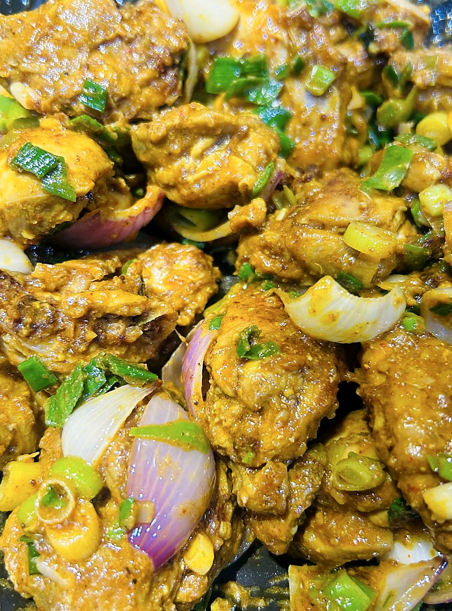
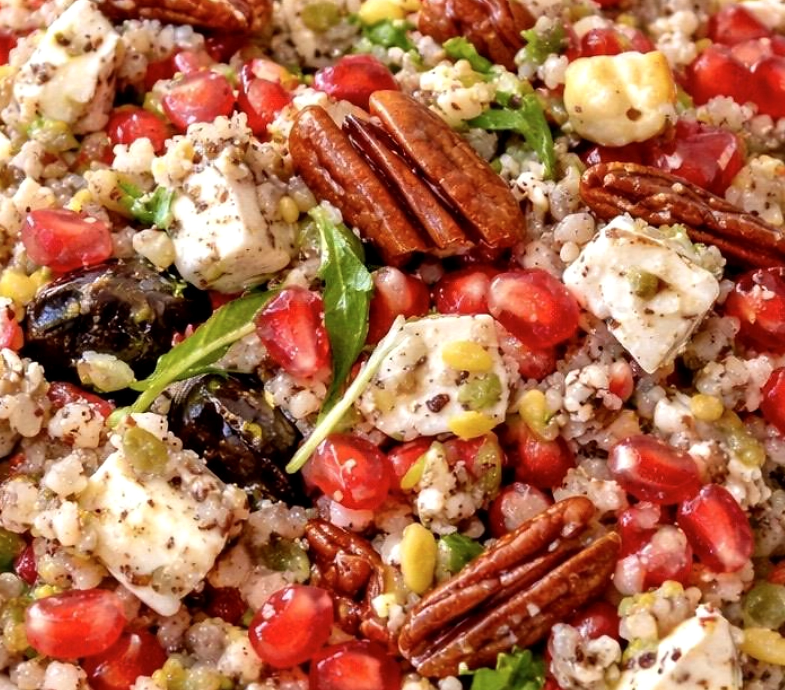

THE MENU
Every recipe has earned its place on this menu.
Some came from my childhood, some from friends, some from years of experimenting.
But every single one is cooked exactly the way I’d serve it at my own table.



PRE-ORDER ONLY
Browse the menu, pick your pack size, and message on WhatsApp. Svety will confirm the fresh batch.